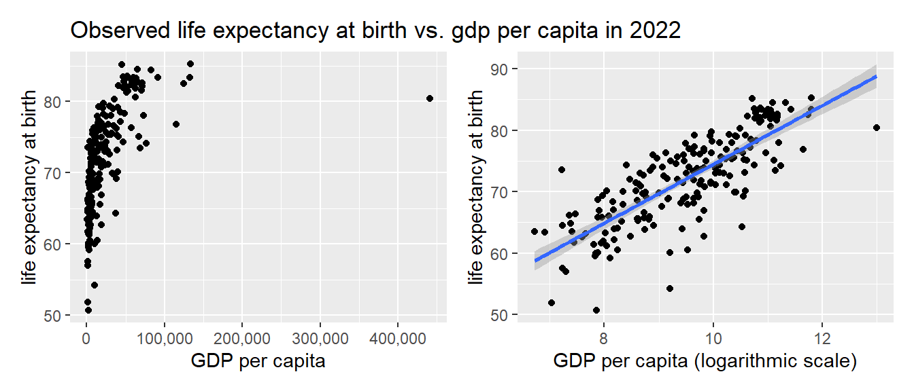
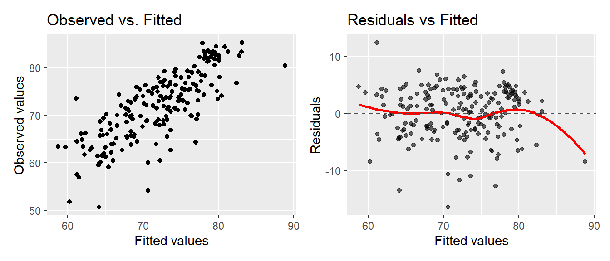

UCB MIDS 203 Fall 2026 Section 6 Final Project Report
Author
Vlad Lee, Sophia Liang, Mark Randall
1. Introduction
Our research question is to describe at a country level how the Life Expectancy is related to economic development, measured by GDP per capita. Our audience is individuals who are not socio-economic professionals, but would like to expand their worldview of how a range of societal metrics can influence the typical individual’s life expectancy, and understand broader patterns in global development and living standards. The larger context of the question lies in discussions of economic development, global inequality, and public health, where researchers and policymakers aim to understand why countries experience different health outcomes and living standards.
Predicting life expectancy is studied by Samuel Preston(1975), who proposed a Preston curve, which demonstrates a concave relationship between life expectancy and GDP per capita. Additionally, Roffia et al. conducted a longitudinal study to determine life expectancy at birth based on certain socioeconomic and demographic factors. Our rerport brings together multiple dimensions of national development in one accessible country-level framework, providing a holistic picture describing how multiple kinds of determinants interact and influence life expectancy.
2. Source Data
Our data is sourced from Gapminder, a Swedish organization that curates reliable data on global trends, compiled from sources such as the World Bank. The data includes annual country level observations spanning multiple decades. We construct a cross sectional dataset using data from 2022, resulting in one row per country (193 observations). We use country metrics as our features that are normalized (e.g. per person) to remove population size effects.
Each country is represented by a 3-letter country code and country long name. The outcome variable for our analysis is life expectancy (lex), which captures overall population health. Our primary explanatory variable is GDP per capita (gdp_pcap), which measures economic development. Though the online dataset includes hundreds of indicators, we have selected subset to represent broad categories of health, inequality, population demographics, economy and infrastructure:
children_per_woman_total_fertility
average_daily_income
population_density_per_square_k
gini coefficient
cell_phones_per_100_people
median_age_years
broadband_subscribers_per_100_p
co2_pcap_cons
3. Primary Analysis
Our primary anlysis describes the relationship between life expectancy at birth and GDP per capita across our country data for 2022. GDP per capita is a currency measurement and currency data (e.g. salary, earnings) is typically well suited to a logarithmic transformation. We plot the observed life expectancy data against the observed GDP per capita data, and note that a logarithmic transformation does capture a linear relationship more effectively than the untransformed data:

The correlation coefficient of life expectancy against the log of GPD per capita is 0.796, supporting the clear linear relationship indicated visually in the scatter plot. We regress life expectancy at birth on GRP per capita and following the application of OLS we specify as model as: \[\text{lex} = 26.501 + 4.796 \cdot \log(\text{GDP per capita})\]

The observed vs. fitted plot suggests that log-GDP-pcap model captures the general positive correlation with life expectancy, since fitted values track the observed values well. However, the residuals vs. fitted values plot shows a slight systematic curvature rather than a random scatter around zero, specifically at the higher fitted values, although we note only one obserbation at this range. This demonstrates that GDP per capital does not capture the relationship completely and additional predictors are necessary to improve the model fit.
We perform a t-test of the simple model coefficients using robust variance. In this model and all subsequent specifications, we report robust standard errors to account for heteroskedasticity:
t test of coefficients:
Estimate Std. Error t value Pr(>|t|)
(Intercept) 26.50065 2.70927 9.7815 < 2.2e-16 ***
log(gdp_pcap) 4.79633 0.27998 17.1311 < 2.2e-16 ***
---
Signif. codes: 0 '***' 0.001 '**' 0.01 '*' 0.05 '.' 0.1 ' ' 1
The p-value is below 0.001 and much smaller than our target level of significance at 0.05. As a result, we can reject our NULL hypothesis and conclude that there is overwhelming evidence that there is a postive relationship between GDP per capita and life expectancy. A 10 percent increase in GDP per capita is associated with an approximately 0.48 year increase in life expectancy, though this reflects a cross country relationship rather than a causal effect within a given country.
4. CLM Assumptions
5. Expanded Analysis
To better understand the relationship between life expectancy and broader measures of development, we extend our baseline model by incorporating additional variables capturing demographics, inequality, and population characteristics. Before constructing the expanded model, we note that several variables are strongly correlated with GDP per capita. In particular, average daily income is highly correlated with GDP per capita (correlation \(\approx 0.96\)), indicating that both variables capture similar aspects of economic development. Including both in the model would introduce multicollinearity and lead to unstable coefficient estimates. For this reason, we exclude average daily income and retain GDP per capita as our primary measure of economic development.
5.1 Demographic Factors
We first extend the model by adding demographic features for fertility (children per woman) and median age. Higher fertility is associated with lower life expectancy and higher median age is associated with higher life expectancy. \[
\begin{aligned}
\text{lex} &= 46.327 + 2.415 \cdot \log(\text{GDP per capita}) \\
&\quad - 1.274 \cdot \text{children per woman} \\
&\quad + 0.205 \cdot \text{median age}
\end{aligned}
\]
A coefficient test shows that all three coefficients are statistically significant at the 0.05 level, with robust standard errors. Including these variables improves model fit and reduces the magnitude of the GDP coefficient, suggesting that part of the relationship between income and life expectancy operates through demographic factors. An ANOVA test confirms that adding the demographic factors significantly improves model fit (F = 18.85, p < 0.0001), indicating that these factors add meaningful explanatory power for life expectancy.
5.2 Inequality
We next incorporate inequality by adding the Gini index, a measure of wealth inequality. We observe a negative and statistically significant coefficient for the Gini index, indicating that higher inequality is associated with lower life expectancy, holding other factors constant. The coefficient on median age becomes statistically insignificant in this specification (p = 0.07), while the effects of GDP per capita and fertility remain statistically significant and consistent in direction.
An ANOVA test comparing models with and without inequality shows that adding the Gini index significantly improves model fit (F = 15.15, p = 0.0001). We reject the null hypothesis and conclude that including inequality explains significantly more variation in life expectancy.
Appendix
Requirements
The one-page appendix is intended for extra information that will help your instructor assess your model building process. Please include the following elements:
A Link to your Data Source. If you used specialized code to access your data, please include that here. Please make sure your instructor has the ability to access the data.
A List of Model Specifications you Tried. We are interested in seeing how you arrived at your final model. In just a sentence, please provide a reason or something that you learned from each specification.
A Residuals-vs-Fitted-values Plot. Please generate this plot for your final model that includes variable transformations. Your instructor will use this plot to assess how well you have captured the shape of the relationship between your X and your Y variable. For example, if there is a clear parabolic pattern in your residuals-vs-fitted plot, that is a signal that you should have included a square term.
Datasource
Our data was initially sourced from www.gapminder.org, using the download interface provided on the website. After confirmning our approach, we downloaded individual CSV files for each indicator from github and combined these into a single dataset for our anlaysis. The code for this data wrrangling process is accessible in the data_cleaning folder in our project repo.
Given that the overall clean dataset is not large, we have included this CSV file in our repo under data/combined_data_2022.csv. We recommend that the instructor access this file directly to assess the analysis presented herein.
Regression Models of Life Expectancy
Baseline
Demographics
Final Model
+ p < 0.1, * p < 0.05, ** p < 0.01, *** p < 0.001
Intercept
26.501***
46.327***
56.893***
(2.709)
(5.259)
(6.068)
Log GDP per Capita
4.796***
2.415***
2.252***
(0.280)
(0.532)
(0.548)
Children per Woman
-1.274**
-1.541***
(0.480)
(0.449)
Median Age
0.205**
0.136+
(0.078)
(0.075)
Gini Index
-0.159***
(0.047)
Num.Obs.
193
193
193
R2
0.633
0.694
0.717
R2 Adj.
0.631
0.689
0.711
Std.Errors
HC1
HC1
HC1
Data obtained from Gapminder (https://www.gapminder.org/data/).
Baseline model (Life Expectancy ~ Log(GDP per Capita)) - Shows a strong positive relationship while accounting for skewness in GDP per capita, improving interpretability.
Demographics model (adding fertility and median age) - Adds key population characteristics and shows that factors are statistically significant predictors of life expectancy.
Final model (adding inequality) - Including the Gini index shows that it is statistically significant, while median age becomes insignificant.